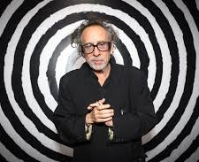

TIM BURTON, EL GENIO DE LO EXTRAÑO

Una aproximación a la historia de su vida

Tim Burton es un cineasta, productor, escritor y artista estadounidense, nacido el 25 de agosto de 1958 en Burbank, California. Su estilo distintivo y sus contribuciones al cine lo han convertido en uno de los directores más reconocidos de Hollywood.
Primeros Años
Timothy Walter Burton, mejor conocido como Tim Burton, nació el 25 de agosto de 1958 en Burbank, California, un suburbio tranquilo y residencial de Los Ángeles. Desde una edad muy temprana, Burton mostró un gran interés por lo extraño, lo macabro y lo fantástico. Su infancia estuvo marcada por una sensación de aislamiento y soledad, algo que reflejaría más tarde en muchos de sus personajes.
Burbank era, en muchos sentidos, un lugar aburrido y monótono para alguien con una imaginación tan rica como la de Burton. La vida suburbana, con sus calles uniformes y casas casi idénticas, le resultaba sofocante, lo que lo llevó a refugiarse en su propio mundo interior. Desde muy pequeño, prefería pasar su tiempo solo dibujando o viendo películas clásicas de terror y ciencia ficción en la televisión, en lugar de socializar con otros niños.
Entre sus principales influencias, se destacan los monstruos del cine clásico, especialmente los filmes protagonizados por Vincent Price, un actor con quien más tarde desarrollaría una relación cercana y colaborativa. "Frankenstein" (1931) y "Drácula" (1931), películas de la era dorada de los estudios Universal, capturaron su imaginación y marcaron profundamente su estilo visual. Estas películas no solo le fascinaban por su estética oscura y sus personajes inadaptados, sino también por la capacidad de las historias para explorar temas más profundos como la alienación y la incomprensión.
Otra fuente de inspiración clave para el joven Burton fueron los cortometrajes de animación en stop-motion y las películas de Ray Harryhausen, cuyo trabajo de efectos especiales de criaturas míticas y monstruos lo motivaron a experimentar con el stop-motion desde niño. Durante su adolescencia, Burton comenzó a hacer sus propios cortometrajes en Super 8, un formato popular en la década de 1970 para cineastas aficionados. Estas primeras obras ya mostraban la inclinación de Burton hacia lo macabro y lo inusual.
Aislamiento y Creatividad
Burton creció como un niño reservado y solitario. En entrevistas posteriores, ha mencionado que nunca se sintió del todo conectado con sus compañeros de clase, y esta sensación de ser un "outsider" es algo que llevaría a sus futuros personajes, muchos de los cuales se enfrentan a la incomprensión de la sociedad.
Este sentimiento de desconexión con el mundo exterior impulsó su creatividad y lo motivó a buscar formas de expresión a través del dibujo y la creación de personajes. Desde niño, Burton tenía una habilidad innata para el arte y, según él mismo ha mencionado, prefería comunicar sus pensamientos y emociones a través de imágenes antes que con palabras. Era un ávido dibujante, y muchos de los bocetos que hacía en su juventud formaron las bases de los personajes que luego cobrarían vida en sus películas.
El Instituto de las Artes de California (CalArts)
Después de completar sus estudios secundarios en Burbank, Burton se inscribió en el Instituto de las Artes de California (CalArts), una prestigiosa escuela de arte fundada por Walt Disney. Fue aquí donde comenzó a profesionalizar su talento artístico y a refinar su técnica. En CalArts, Burton estudió en el programa de animación que había sido diseñado por Disney para formar a la próxima generación de animadores de la empresa. Sin embargo, aunque adquirió una gran cantidad de habilidades técnicas, su estilo nunca encajó del todo en la fórmula de Disney, que era mucho más alegre y brillante de lo que él imaginaba para sus creaciones.
Durante su tiempo en CalArts, Burton se destacó por sus ideas innovadoras y por su peculiar sentido del humor oscuro. A menudo, sus trabajos de clase sorprendían a sus profesores y compañeros por lo extraños que eran. Sin embargo, fue precisamente este enfoque único lo que llamó la atención de los ejecutivos de Disney, quienes, a pesar de las diferencias estilísticas, lo contrataron para trabajar como animador después de su graduación en 1979.
Primeros Pasos en Disney
Tras su graduación, Burton comenzó a trabajar como aprendiz en el estudio de animación de Walt Disney, donde contribuyó en películas como "Tod y Toby" (1981) y "Taron y el caldero mágico" (1985), pero rápidamente quedó claro que su estilo no encajaba del todo con la estética convencional de Disney. Su enfoque más oscuro y excéntrico contrastaba con las historias brillantes y alegres que caracterizaban al estudio en esa época.
A pesar de esta disonancia creativa, Disney le dio a Burton la oportunidad de dirigir algunos cortometrajes que le permitieran mostrar su estilo personal. Fue durante este tiempo que Burton creó "Vincent" (1982), un cortometraje animado en stop-motion en blanco y negro que rendía homenaje a Vincent Price, una de sus mayores inspiraciones. La película cuenta la historia de un niño que sueña con ser como Vincent Price, sumergiéndose en mundos oscuros y sombríos, y muestra ya muchas de las características que definirían el estilo de Burton: la mezcla de lo macabro con lo poético, el uso de la animación stop-motion y la estética gótica.
Después de "Vincent", Burton dirigió "Frankenweenie" (1984), un cortometraje en acción real que cuenta la historia de un niño que revive a su perro muerto a través de un experimento al estilo de Frankenstein. A pesar de su innovador enfoque y las influencias clásicas, Disney consideró que el corto era demasiado oscuro para un público infantil y decidió no lanzarlo en cines, aunque más tarde se convertiría en una obra de culto.
El Camino hacia la Fama
El rechazo de "Frankenweenie" por parte de Disney fue un punto de inflexión en la carrera de Burton. Si bien su estilo no era adecuado para la visión que Disney tenía en ese momento, su trabajo llamó la atención de otras personas dentro de la industria del cine. Fue entonces cuando Burton atrajo la atención del actor y comediante Paul Reubens, quien le pidió que dirigiera su primera película, "La gran aventura de Pee-Wee" (1985), una excéntrica comedia de aventuras. Este filme fue un gran éxito comercial y marcó el comienzo de la carrera de Tim Burton como director de largometrajes.
A partir de este momento, la carrera de Burton se disparó. Con su estilo oscuro, gótico y lleno de humor negro, Tim Burton comenzó a desarrollar su propio lenguaje cinematográfico, siempre fiel a las influencias que había absorbido durante su infancia. Los años de soledad y creatividad en Burbank, junto con su amor por el cine clásico y lo excéntrico, lo ayudaron a forjarse como uno de los cineastas más únicos y reconocidos de Hollywood.